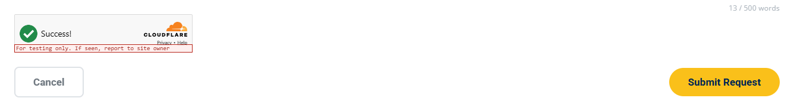

Update Cloudflare Turnstile (CAPTCHA) Settings¶
Summary: Replace or test the Cloudflare Turnstile site key and secret key, allow a hostname on the widget, and change how the widget looks, in the server config, the shared browser script, and the Cloudflare dashboard.
When to change: When keys are rotated, the site is served from a new domain or staging host, or someone needs to test forms on a local server.
Difficulty: ★★★★
Estimated Time: 20 minutes
Visual Reference¶

Turnstile widget after it passes, above the form buttons
Real Code Snippet (/Contact_Us.html — security script tags, lines 205–209)
The same five tags, in this order, sit on every form page just before JS/layout.js. api.js is deferred, so it runs after the two Turnstile scripts below it.
Target Files¶
| Path | Purpose in this task |
|---|---|
/includes/turnstile.php |
Checks the secret key and posts cf-turnstile-response to Cloudflare. This is where the server reject messages and error_log lines come from. |
/turnstile-config.php |
Prints the public site key as window.MPCT_TURNSTILE_SITE_KEY. Sends Cache-Control: no-store. The secret key never leaves the server. |
/JS/turnstile.js |
Renders the widget, waits for the deferred API, and chooses the message the visitor sees before a request is sent. |
/mpact_config.php |
Server-only file, not in the repo. Holds TURNSTILE_SITE_KEY and TURNSTILE_SECRET_KEY. The nano.nau.edu server administrator edits the production copy. |
/CSS/style.css |
Narrow-screen .mpct-turnstile rules that center the widget and allow sideways scroll. |
| Cloudflare dashboard (not a file) | The widget whose site key and secret key you copy, and Hostname Management for every host that serves the forms. |
[!NOTE] Turnstile is the site's CAPTCHA. There is no reCAPTCHA, hCaptcha, or image puzzle on this site. Cloudflare Turnstile is the check the visitor can see. The hidden honeypot is the second bot check, and the server runs it before Turnstile. The full order is on Add Security Checks to a New Form.
[!WARNING] The site key and the secret key must come from the same widget, and every hostname that serves the forms must be on that widget. A hostname missing from the widget makes the widget error in the browser. The visitor sees "Security check failed to load. Confirm your domain is allowed on your Turnstile widget, refresh, and try again." No request is sent, so the server log stays empty. A wrong or mismatched secret key lets the widget pass, then siteverify fails. The visitor sees "Security verification failed. Please try again." and the server logs
MPCT Turnstile siteverify failed:plus Cloudflare's error codes. Either mistake blocks every form. The visitor only sees that generic sentence, and nothing is saved.[!IMPORTANT] Verify against your local codebase:
REPLACE_WITH_YOUR_SITE_KEYin/JS/turnstile.js,REPLACE_WITH_YOUR_SECRET_KEYin/includes/turnstile.php, the constant namesTURNSTILE_SITE_KEYandTURNSTILE_SECRET_KEY, the five security script tags on each form page, and the.mpct-turnstilerules in/CSS/style.css.
Step-by-Step Instructions¶
One site key and one secret key cover all six forms. Please keep the browser half and the server half on the same widget.
Part 1: Understand how the widget loads¶
- To get started, please open
/Contact_Us.htmland find the five security script tags in the Visual Reference (lines 205–209). The same five lines, still beforeJS/layout.js, are on/ServiceRequest.html(lines 1936–1940),/Reserve_Equipment.html(lines 639–643), and/CHIPS_Scholars_Program.html(lines 638–642). - Please leave that order as it is.
api.jsusesdefer, and the next scripts do not, soturnstile-config.phpandJS/turnstile.jsrun while Cloudflare's API is not available yet. That is why Part 1 step 5 polls instead of callingturnstile.ready(). The helper readswindow.MPCT_TURNSTILE_SITE_KEYonly when a form renders the widget, not when the script file itself loads. Keepturnstile-config.phpahead ofJS/turnstile.jsanyway. If the global is still empty at render time, every visitor sees "Security check is not configured. Add your Turnstile site key to the server config." and no request is sent. The two CSRF tags are a separate check. Please leave them in this block. Removing either one makes every submit fail the CSRF check. Update CSRF Token Protection covers that pair. - Please open
/turnstile-config.php. The whole file is the bridge from the server config to the browser.
Real Code Snippet (/turnstile-config.php — public site key script, lines 1–16)
The response is JavaScript, not HTML. If TURNSTILE_SITE_KEY is missing, the script still returns window.MPCT_TURNSTILE_SITE_KEY="";. The secret is not in this file and is not in the response. Please leave Cache-Control: no-store in place. If that response is cached, a rotated site key can stay in the browser after you change the secret. Every submit then fails siteverify with the generic failure message until the cache expires.
4. Please open /JS/turnstile.js. An empty site key and the placeholder string are both treated as "not configured".
Real Code Snippet (/JS/turnstile.js — site key check, lines 13–19)
- The helper does not call
turnstile.ready(). That call throws whenapi.jsis loaded withdefer, which is how every form page loads it.whenReady()polls instead: every 100 ms, and it gives up after 100 tries (about 10 seconds).
Real Code Snippet (/JS/turnstile.js — poll until the deferred API exists, lines 27–48)
When the 10 seconds run out, the timeout handler marks the widget as failed. The visitor then sees the "failed to load" sentence from the next step, and no request is sent. A blocked challenges.cloudflare.com script fails the same way. The server log stays empty.
Real Code Snippet (/JS/turnstile.js — timeout marks the widget failed, lines 101–103)
- Before a request is sent,
getBlockReason()picks the sentence in the feedback box. An empty return means the token is ready.
Real Code Snippet (/JS/turnstile.js — browser message before submit, lines 150–161)
Any truthy widgetErrors value uses that same "failed to load" sentence. That includes a hostname the widget does not allow (widget-error from the error callback), the 10-second timeout, and an expired token (expired). The contact form shows the sentence, and falls back to "Please complete the security check." when getBlockReason() returns an empty string but the token is still missing. The other three submit scripts use that same fallback.
Real Code Snippet (/JS/script.js — contact form blocks the submit, lines 1181–1187)
- The contact widget is not drawn on first paint.
#formContainerstarts hidden (/Contact_Us.html, line 132)./JS/script.jscallsMPCT.Turnstile.ensureRendered('turnstile-contact')after a category is chosen (around line 825), including when the URL is?category=other(around line 1240). An empty contact page is not a missing key. Booking renders on load (/JS/booking.js, around line 253). The scholarship inline script renders when it runs (around line 660). Service Request renders the printing widget on load, and renders laser or scanning when that panel is opened (/ServiceRequest.html, around lines 1957 and 1992).
Part 2: Replace or rotate the keys¶
- The keys are not in git. Please open
/.gitignoreand confirm the config file is ignored. There is no sample copy in the repo.
Real Code Snippet (/.gitignore — server config stays off git, lines 10–11)
- On nano.nau.edu, the nano.nau.edu server administrator edits
/mpact_config.phpin the site root (the same folder asFormSubmission.php). For a local test, create that file yourself and keep it on your machine. Never commit it. If the file is missing,/turnstile-config.phpcannot run, the browser never receives a site key, and the form shows "Security check is not configured. Add your Turnstile site key to the server config." A POST to a handler fails earlier than that:mpact_config.phpis loaded before/includes/validation.php, so the friendly JSON error handler is not installed yet. The contact form then shows "Unable to connect to the server. Please try again later or email us directly." The PHP log reports that the file could not be loaded. That message does not name Turnstile. - Add or edit the two constants below. Do not replace the rest of the file. The handlers also read mail settings from it. Replacing the whole file makes the submit fail after Turnstile has already passed, and the Turnstile sentences will not tell you why. Both values have to be PHP constants with these exact names. A misspelled name is treated as "not configured".
| # | What to Change | Description | Options / Example |
|---|---|---|---|
| ① | TURNSTILE_SITE_KEY |
Public site key from the Cloudflare widget. /turnstile-config.php sends it to the browser. |
define('TURNSTILE_SITE_KEY', '[TURNSTILE_SITE_KEY]'); |
| ② | TURNSTILE_SECRET_KEY |
Secret from that same widget. Stays on the server. Never put it in HTML, JavaScript, or git. | define('TURNSTILE_SECRET_KEY', '[TURNSTILE_SECRET_KEY]'); |
Example Snippet (two constants in mpact_config.php)
Please do not add spaces or a newline inside the quotes. The browser trims the site key before it renders. The server trims the secret only to decide whether it is configured, then sends the raw constant to Cloudflare (line 40 of the snippet below). A trailing space still counts as configured, siteverify rejects it, and the visitor sees the generic failure.
4. REPLACE_WITH_YOUR_SITE_KEY and REPLACE_WITH_YOUR_SECRET_KEY count as not configured. So does an empty string, and so does a constant that was never defined.
Real Code Snippet (/includes/turnstile.php — secret counts as missing, lines 16–26)
- Please read
verifyTurnstile()before you change keys, so you know which sentence belongs to which mistake. The comment on line 6 of this file says to call it immediately after the POST check. That comment is out of date. The live call sits after the honeypot and the CSRF check, and before the rate limit:/FormSubmission.php(lines 330–337),/ServiceRequestSubmission.php(lines 501–511),/EquipmentReservation.php(lines 178–188), and/IntelScholarshipSubmission.php(lines 39–47). Please leave those calls where they are. Moving Turnstile earlier changes which sentence a blocked visitor sees. The guard-chain table is on Add Security Checks to a New Form.
Real Code Snippet (/includes/turnstile.php — siteverify and the visitor messages, lines 28–74)
respond() in /includes/validation.php sends HTTP 200 and JSON {"success": false, "message": "…"}, then exits. A failed check is not an HTTP error. Use the table below when the wording is ambiguous, and Troubleshoot Blocked Form Submissions when a later layer (CSRF, honeypot, rate limit, or mail) is the one that stopped the submit.
| # | What to Change | Description | Options / Example |
|---|---|---|---|
| ① | Site key missing, empty, or REPLACE_WITH_YOUR_SITE_KEY |
The browser stops the submit. No POST is sent, and the server log stays empty. | Security check is not configured. Add your Turnstile site key to the server config. |
| ② | Secret missing, empty, or REPLACE_WITH_YOUR_SECRET_KEY |
The widget can still pass. The server rejects the POST and writes nothing to error_log. |
Security verification is not configured on the server. Please contact the site administrator. |
| ③ | Hostname not on the widget | The widget errors in the browser. No POST, so the server log stays empty. | Security check failed to load. Confirm your domain is allowed on your Turnstile widget, refresh, and try again. |
| ④ | Secret from another widget, a dummy site key with a production secret, or a secret with a trailing space | siteverify fails. The log line includes Cloudflare's error codes. | Security verification failed. Please try again. and MPCT Turnstile siteverify failed: <codes> |
| ⑤ | PHP has no curl, or Cloudflare does not answer within 10 seconds | The visitor is asked to retry. The log names curl, not a key. | Security verification is temporarily unavailable. Please try again in a moment. |
Part 3: Allow a new hostname¶
Do this when a staging host or a new domain will serve the forms with the real widget. Dummy keys in Part 4 do not need a hostname entry. They work on any host, including localhost.
- In the Cloudflare dashboard, open the Turnstile page.
- Select the existing widget. It must be the widget whose site key and secret key are in
mpact_config.php. Adding the hostname on a different widget does nothing for these forms, and the failure looks like a bad hostname (row ③ in Part 2). - Go to Settings.
- Under Hostname Management, select Add Hostnames.
- Add the hostname, or choose one already on the account, then select Add. These names are Cloudflare's current dashboard labels (Hostname management).
| # | What to Change | Description | Options / Example |
|---|---|---|---|
| ① | Hostname | A fully qualified domain name only. Adding a name also allows its subdomains. Adding only a subdomain does not allow the parent. | nano.nau.edu also allows www.nano.nau.edu. www.nano.nau.edu alone does not allow nano.nau.edu. |
| ② | Rejected text | Schemes, ports, paths, and * are not accepted. The widget will not save them. |
Not https://nano.nau.edu, not nano.nau.edu:443, not *.nau.edu. |
| ③ | How many | Cloudflare's limit is 10 hostnames per widget on a free account, and 200 on an Enterprise account. Add fails at the limit instead of saving quietly. | Remove a host you no longer serve before you add another. |
- Please do not add
localhostor127.0.0.1to the production widget. Cloudflare recommends that a production site key not allow local domains. Use the dummy pair in Part 4 on your own machine instead. Removingnano.nau.edufrom the production widget blocks every public form in the browser, and the server log stays empty. - Please leave the widget visible. These pages render a visible widget into
.mpct-turnstile, and the wait message tells the visitor to watch the spinner above Submit. Switching the dashboard widget to Invisible removes that box. The forms will not explain the new behavior.
Part 4: Test locally with Cloudflare's dummy keys¶
Cloudflare publishes dummy site keys and secret keys for local tests. They are not secret. A dummy site key only works with a dummy secret key. A production secret rejects the dummy token (XXXX.DUMMY.TOKEN.XXXX), and a dummy secret rejects a real token. Copy the values from Test your Turnstile implementation. Do not put a dummy site key in the production mpact_config.php. The widget then shows the red "For testing only" line from the screenshot above, and the always-pass pair accepts every visitor.
| # | What to Change | Description | Options / Example |
|---|---|---|---|
| ① | Always-pass site key, visible | Use this with the always-pass secret for a normal local submit. | 1x00000000000000000000AA |
| ② | Always-fail site key, visible | The widget itself is labeled always-fail. Do not use it for the server-log test in Let's Verify. | 2x00000000000000000000AB |
| ③ | Always-pass site key, invisible | This site expects a visible widget. Skip this row unless you mean to hide the box. | 1x00000000000000000000BB |
| ④ | Always-fail site key, invisible | Same caution as row ③. | 2x00000000000000000000BB |
| ⑤ | Forced challenge, visible | Use when you need to click through an interactive challenge. | 3x00000000000000000000FF |
| ⑥ | Always-pass secret | Pair with row ①. | 1x0000000000000000000000000000000AA |
| ⑦ | Always-fail secret | Cloudflare describes this as always failing validation. | 2x0000000000000000000000000000000AA |
| ⑧ | Token-already-spent secret | Pair with row ①. Cloudflare documents a siteverify failure of timeout-or-duplicate. |
3x0000000000000000000000000000000AA |
Cloudflare's published pairs are: row ① with row ⑥ (always succeeds), row ② with row ⑦ (always fails), and row ① with row ⑧ (fails validation with timeout-or-duplicate).
- Please put the always-pass visible pair in your local
mpact_config.php. A local server is enough. You do not need the nano.nau.edu server administrator for this step.
Example Snippet (local always-pass pair)
- For the failed siteverify test, keep the always-pass site key so the widget still writes a token, and change only the secret. Row ② can fail inside the widget before a POST exists. You would then see the browser "failed to load" sentence, and the server log would stay empty, which does not exercise
verifyTurnstile().
Example Snippet (local always-fail secret)
Part 5: Change the widget's look¶
The shared helper passes a fixed set of options into turnstile.render(). A page can pass more through MPCT.Turnstile.render(id, {…}) or MPCT.Turnstile.ensureRendered(id, {…}). Object.assign merges them, and the page's keys replace the defaults. Please keep the three callbacks. getBlockReason() depends on them. Replacing error-callback, expired-callback, or callback does not wrap the old function. The helper then cannot see a widget error or an expired token. The visitor may stay on the spinner sentence after the widget has already failed, or the form may send a token that the server rejects with the generic failure message.
- Please open
/JS/turnstile.jsand find the object passed torender().
Real Code Snippet (/JS/turnstile.js — options passed to render, lines 78–91)
render() returns null immediately. The widget id is stored later on the container as data-turnstile-widget-id. Please do not treat that return value as success or failure. A missing site key also returns null, and it sets widgetErrors to missing-site-key before the poll starts. getBlockReason() still shows the "not configured" sentence in that case, because it checks the site key first.
Real Code Snippet (/JS/turnstile.js — a second call ignores new options, lines 108–119)
If the container already has data-turnstile-widget-id, ensureRendered() returns without looking at options. The old look stays, and nothing tells you the call was ignored. Reload the page after you change options.
- Change the shared look in the object above when every form should match. Pass options from one page only when that form should differ. Cloudflare's theme values are
light,dark, andauto(widget configurations). This site setslight. PHP does not readaction, so changingturnstile-spin-v2does not change accept or reject. It only changes the label Cloudflare records for the widget. Please do not passsitekeyin the options. That replaces the server key, siteverify fails, and the visitor sees the generic failure.
| # | What to Change | Description | Options / Example |
|---|---|---|---|
| ① | sitekey |
Taken from TURNSTILE_SITE_KEY. Overriding it uses a different key than the secret. |
Leave this key out of the options object. |
| ② | theme |
Light, dark, or auto. The shared default is light. |
theme: 'dark' |
| ③ | action |
Sent with the challenge. Our PHP does not check it. | 'turnstile-spin-v2' |
| ④ | error-callback |
Sets widget-error, which getBlockReason() turns into the "failed to load" sentence. |
Keep the function in /JS/turnstile.js. |
| ⑤ | expired-callback |
Sets expired. That value is also truthy, so the visitor sees the same "failed to load" sentence. |
Keep the function in /JS/turnstile.js. |
| ⑥ | callback |
Clears the error after a pass (false). |
Keep the function in /JS/turnstile.js. |
Example Snippet (one page overrides the theme only)
Call that once, the first time the form is shown, in place of the existing ensureRendered call for that container. The container ids are turnstile-contact, turnstile-printing, turnstile-laser, turnstile-scanning, turnstile-booking, and turnstile-scholarship.
Design Impact & Layout Solutions¶
- The Design Discrepancy Risk: The site does not pass
sizetorender(), so the widget keeps Cloudflare's default fixed width. On a narrow screen that box is wider than the form column. The two rules below were written for that fixed box. Passingsize: 'flexible'orsize: 'compact'(Cloudflare's other sizes) changes the width those rules center. - Visual Impact: Above 1024 px the contact widget stays left-aligned, as in the screenshot above. At 1024 px and below, the contact rule centers it. At 768 px and below, a second rule centers every
.mpct-turnstileon the site, not only booking. Without those rules the widget clips or pushes the page sideways. Removing the inline 16 px margin pulls the buttons up against the widget, and no stylesheet rule puts that gap back. -
Recommended Solutions:
- Keep the contact rule inside its media query: Lines 5220–5226 sit in
@media (max-width: 1024px)(opened at line 5209, closed at line 5227). The comment just above that query says desktop widths of 1025 px and up are left unchanged. The selectors are#turnstile-contactand#contactForm .mpct-turnstile.
Real Code Snippet (
/CSS/style.css— contact widget at 1024 px and below, lines 5220–5226)- Keep the shared narrow-screen rule: Lines 18744–18750 sit in
@media (max-width: 768px)(opened at line 18647, closed at line 18751). The selectors are#turnstile-bookingand.mpct-turnstile. The second selector matches every form, including Service Request and the scholarship form. Editing it is site-wide. Service Request also setsmax-width: 100%on.mpct-turnstileand its iframe in that page's own@media (max-width: 768px)(/ServiceRequest.html, around lines 821–824). Changing/CSS/style.cssalone does not remove that cap.
Real Code Snippet (
/CSS/style.css— every widget at 768 px and below, lines 18744–18750)- Keep the 16 px gap above the buttons: The contact container carries it inline. The same
style="margin-bottom: 16px;"is on/Reserve_Equipment.html(line 615) and on the three Service Request widgets (/ServiceRequest.html, lines 1333, 1634, and 1918). Please leave it there when you restyle the widget.
Real Code Snippet (
/Contact_Us.html— 16 px gap above the buttons, line 184)- Leave the scholarship row alone:
/CHIPS_Scholars_Program.htmldoes not use that inline margin..intel-register__turnstile-row(around line 22891) is right-aligned withmargin-top: 20px, and.intel-register__actions(around line 22913) addsmargin-top: 28px. At 640 px and below, the row centers. Pasting the contact inline style onto that widget fights the right alignment. The comment on that rule also notes that Cloudflare's inner wrapper iswidth: 100%, which is why the row, not the widget alone, does the alignment.
- Keep the contact rule inside its media query: Lines 5220–5226 sit in
Let's Verify Your Changes¶
- In the site root, create a local
/mpact_config.phpthat git already ignores. Use the always-pass visible pair from Part 4. Do not use this file on nano.nau.edu. - From the site root, start PHP's built-in server:
php -S does not read .htaccess. Turnstile does not need .htaccess. Lines written with error_log() appear in this terminal. On Apache (production, staging, or a local Apache such as XAMPP) those same lines go to the server error log instead. The nano.nau.edu server administrator can read the production log.
3. Open http://localhost:8000/Contact_Us.html?category=other over HTTP. Do not open the file with file://. Turnstile only runs on http:// or https://. In DevTools → Network, confirm api.js and the widget iframe load from challenges.cloudflare.com, and that turnstile-config.php returns JavaScript setting window.MPCT_TURNSTILE_SITE_KEY to 1x00000000000000000000AA with Cache-Control: no-store.
4. The spinner becomes a tick and the widget reads Success. With this dummy site key you also see the red "For testing only" line in the screenshot above. If that red line ever shows on https://nano.nau.edu, the production config is using a test site key. Ask the nano.nau.edu server administrator to put the real pair back.
5. Submit General Inquiry with test details such as name@example.com. In Network, the POST to FormSubmission.php is HTTP 200. HTTP 200 does not mean the check passed. Read JSON success and message. A Turnstile pass means message is not one of the sentences in the Part 2 table. Mail can still fail on a local server after Turnstile has passed. That is a later step. If the sentence asks you to refresh the page, that is CSRF, not Turnstile (Update CSRF Token Protection). Two submits with the same email inside five minutes are allowed. A third is the rate limit, not a bad key (Update Rate Limits). Troubleshoot Blocked Form Submissions matches the other sentences.
6. Leave the server running. Change only TURNSTILE_SECRET_KEY to 2x0000000000000000000000000000000AA, save, and reload. The site-key script is no-store, but reload so the widget writes a fresh token. Submit again. The feedback box shows Security verification failed. Please try again. The terminal shows MPCT Turnstile siteverify failed: followed by Cloudflare's error codes. The widget resets after that error. If you instead see Security check failed to load… and the terminal has no new Turnstile line, the widget never issued a token. Set the secret to 3x0000000000000000000000000000000AA (Cloudflare's documented token-already-spent failure with the always-pass site key) and submit once more. Then put the always-pass secret back before you test anything else.
7. Dummy keys work on every hostname, so they cannot prove Hostname Management. After you add a real hostname in Part 3, load a form on that host with the real keys. The widget should reach Success. A host that is not listed shows Security check failed to load. Confirm your domain is allowed on your Turnstile widget, refresh, and try again. and Network shows no POST.
8. Narrow the window below 768 px. The widget stays centered, and the form can scroll sideways instead of clipping it. The buttons stay 16 px below the widget.
🔔 Documentation Update Reminder: Please make sure to update any How-To procedures or relevant documentation every time you make a change to the website and deploy it. This keeps our operational manual healthy and helpful for the entire team!
Last reviewed: September 21, 2026